Scene 1Warm-Up
▶ Start hereHow your Wonder Films lessons work1-minute videoOpen ▾
🎯 TodayI can…
- explain what an adaptation is and why animals need them to survive.
- describe specific adaptations of Florida animals and connect each one to survival.
- use evidence to explain why some animals survive better in certain Florida habitats than others.

🔎 Mystery specimenWhose skull is this?
What to do: Press Inspect specimen. Move the magnifying lens over the skull, then tap 3 things you notice.
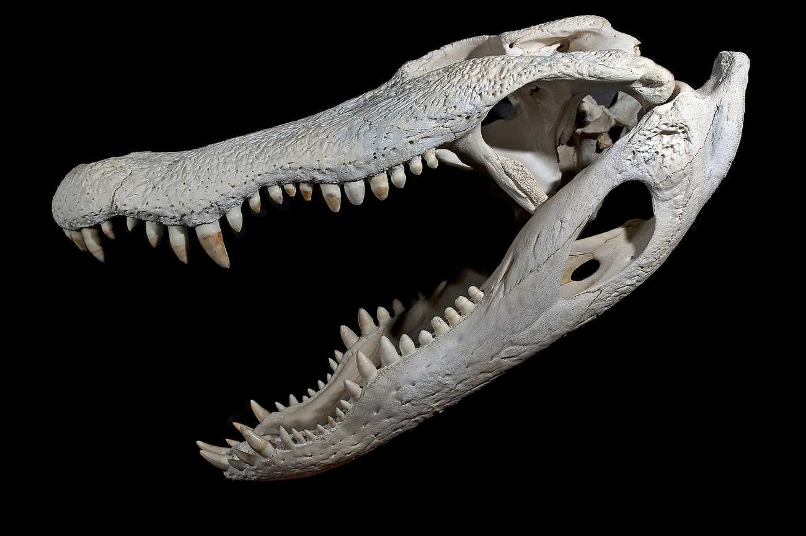
📚 Word WallWords scientists use
What to do: Tap or click each card to flip it and read what the word means.
Scene 2The Lesson
🌱 Part 1What Is an Adaptation?
An adaptation is a body part or behavior that helps an animal survive in its habitat. Adaptations are traits passed down from parents. An animal can't grow a new one just because it needs it.
Animals also respond when the seasons change. In winter, manatees swim to warm springs, and many birds migrate south to Florida from colder places.
🎞️ Put the scenes in orderWhat do manatees do when winter comes?
What to do: Drag each photo into the film strip, from first to last. You can also tap a photo, then tap a frame. Get the order right and your strip becomes a movie.
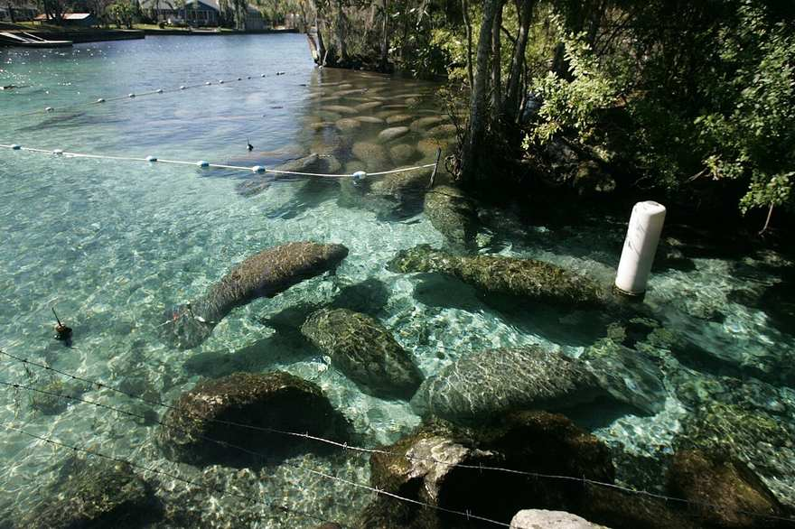
Mia says, "If a manatee gets cold, it will just grow thick fur." What do you think?
🌤 Part 2Florida Animals Up Close
An alligator's eyes and nostrils sit on top of its head, so it can hide underwater and still see and breathe. A Florida panther's padded paws let it walk quietly, and its tan fur blends with the forest.
Camouflage helps predators sneak up on prey. It also helps prey hide.
🧪 The Hide TestWhich background hides which animal?
What to do: Follow the steps one at a time. You will pick, test, and then explain.
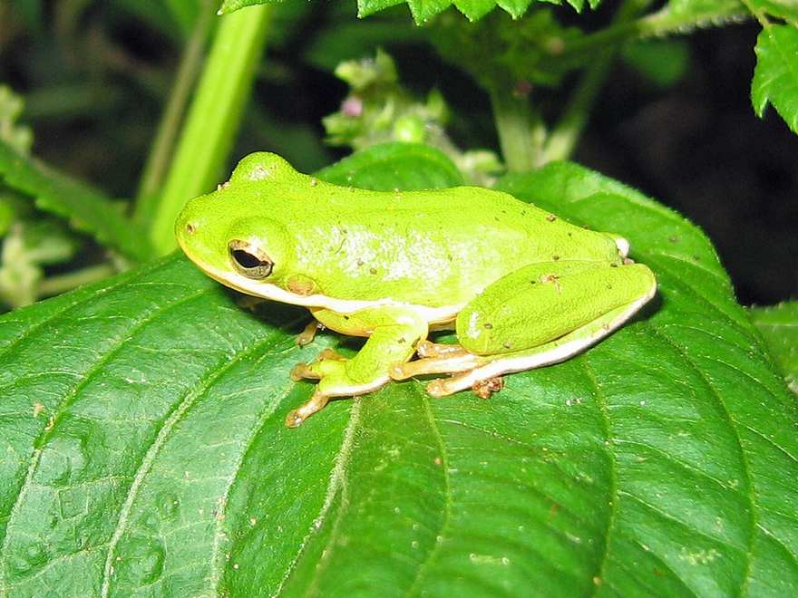
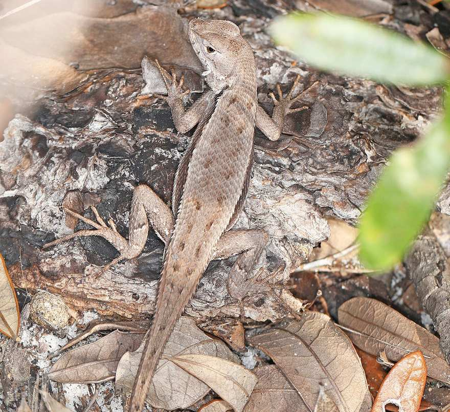
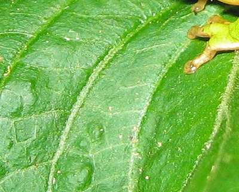
A big green leaf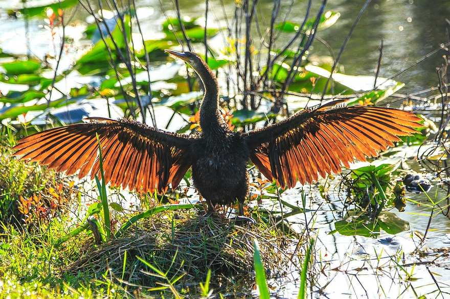
🌍 Part 3Animal Groups
Scientists sort animals into groups by their body features. Mammals have fur and feed their babies milk. Birds have feathers. Reptiles have dry scales. Amphibians have smooth, wet skin. Fish have scales and breathe with gills.
All of these are vertebrates: animals with a backbone. Insects and spiders have no backbone. Some animals, like panthers, give birth to live young; others, like alligators, lay eggs.
🗄️ The Classification CabinetOpen one drawer for each animal group
What to do: First, make a prediction. Then brush the glowing step: drag across it (or tap it again and again) until the photo shows.
A panther and an anhinga both hunt. Do you predict they belong to the same animal group?
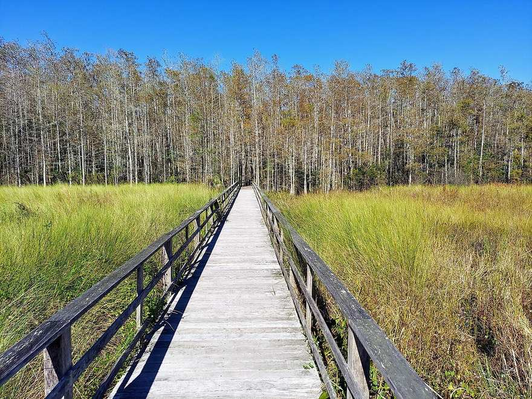
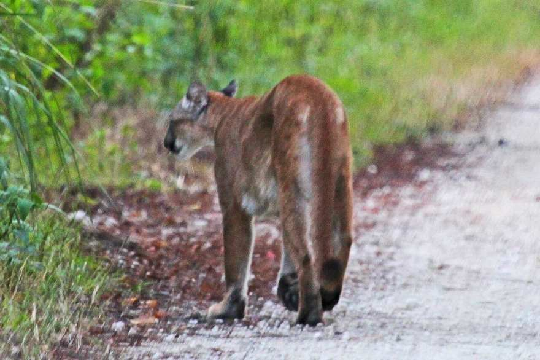
Drawer 1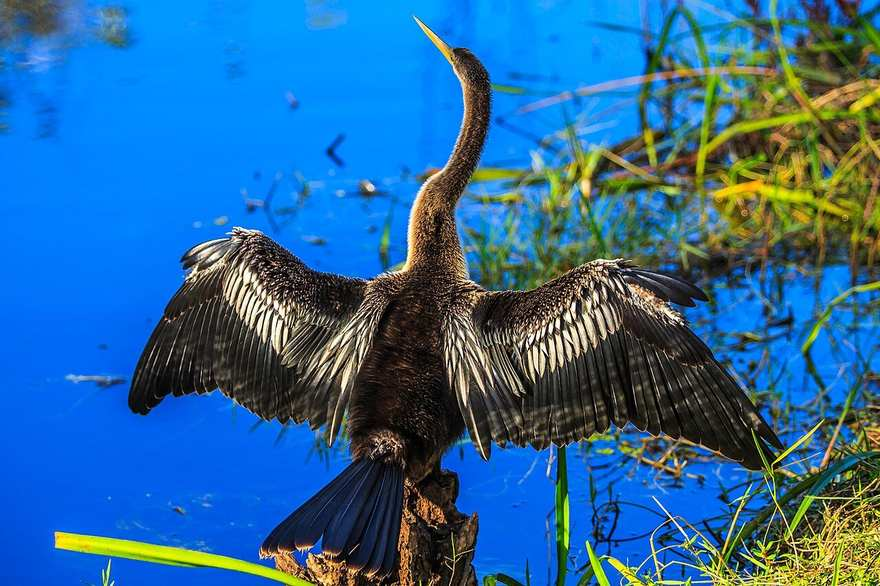
Drawer 2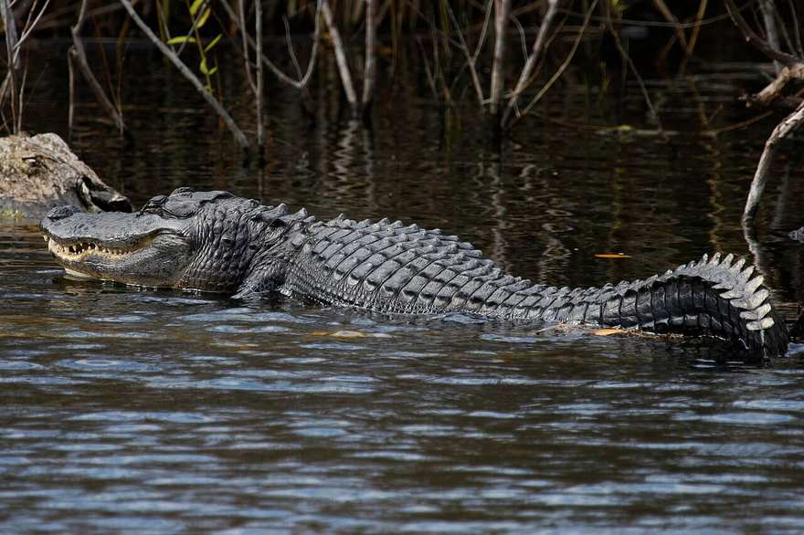
Drawer 3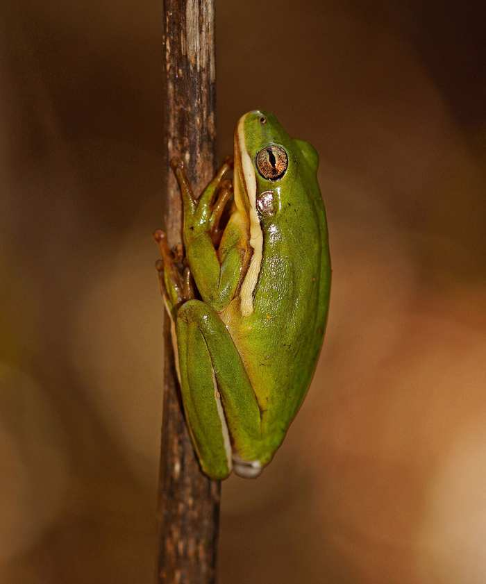
Drawer 4Scientists sort animals into groups by their features. Mammals have fur or hair and feed milk to their babies. Birds have feathers. Reptiles have dry scales. Amphibians have smooth, wet skin and start life in water.
Jay says, "Camouflage only helps animals that get hunted." What do you think?
Only in Florida

The Florida scrub-jay lives nowhere else in the world. It lives only in Florida's dry, sandy scrub.
Each fall, a scrub-jay buries thousands of acorns in the sand, then digs many of them up to eat later.
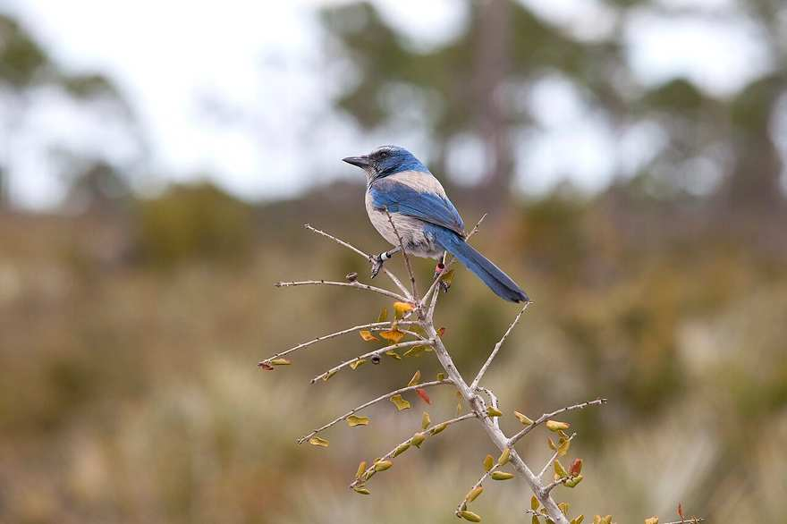
🕵️ Part 4Adaptation Files
What to do: Pick 3 cards, one at a time. Tap an adaptation you see, then name its animal group. Predict where it lives, and watch its habitat appear.
| Card | My observation | Animal group | Habitat | My evidence |
|---|
🌍 Rebuild the sceneUse your evidence to rebuild the scene OPTIONALOpen ▾
What to do: Pick one you solved. Pick the place it points to, then pick the living things that belong there.
Pick one from your chart and explain it.
Start with: "Card __ shows…"
Scene 3Self-Check
What is an adaptation?
The American alligator's eyes and nostrils sit on top of its head. How does this help it survive?
A Florida scrub lizard has sandy-colored skin that matches the pale ground around it. This is an example of what?
Scene 4Assignment
🔍 Part AMatch the adaptation
What to do: Read each one. Pick the best answer, or type your answer.
1. Sticky toe pads that grip wet bark and leaves in the cypress forest.
2. Eyes and nostrils on top of the skull for hunting while underwater.
3. Sandy-colored skin that blends with dry, pale scrub soil.
4. Feathers that are not waterproof, so it can swim underwater to catch fish.
5. Large, padded paws for quiet movement through pine flatwoods.
🚀 Part BShort answer
What to do: Answer in complete sentences. Use your science words.
1. What is an adaptation? Give one example from a Florida animal and explain how it helps that animal survive.
2. Why do animals in different habitats have different adaptations? Use the words habitat and trait in your answer.
✍️ Write and explainA Florida scrub lizard and a green tree frog live in very different places. How do their adaptations help each one survive where it lives?
What to do: Pick one from your evidence chart. Answer the three questions. Use at least one of the science words under the boxes.
Start with: "I think the scrub lizard and the tree frog survive in different places because…"
Start with: "I know this because the lesson showed that…"
Start with: "This makes sense because animals that match their habitat…"
🎨 Part CDraw and label
What to do: Pick any Florida animal from this lesson. Draw it in its habitat and label two adaptations. For each label, name the feature and how it helps.
🎬 Your question from Scene 1Can you answer it now?
What do you still wonder about? Write your question here. Then answer it.
📋 My answersEverything you wrote, in one place
(Your answers show up here as you write.)
How to turn in: Copy your answers and paste them into the Canvas assignment. Or download the file and upload it. Then press Save my drawing in Part C and upload your drawing too.
✅ Checklist
What to do: Tap each item when it is done. Items you finish on the page check themselves.
- My evidence chart has 3 adaptation cards and my explanation.
- Part A: all five matched.
- Part B: questions 1 and 2.
- Part C: my drawing and both labels.
- Write and explain, with at least one science word.
🎬 Premiere my Florida animal storyYour exhibit
What to do: Check your exhibit. Pick the one you wrote about, add your first name, then press Premiere film.
I observed…
Its animal group…
My evidence…
It tells us…
🎞️ This film's frames
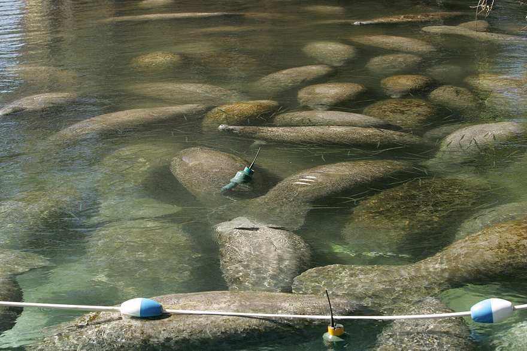
Manatee winter
The Hide Test
The Classification Cabinet
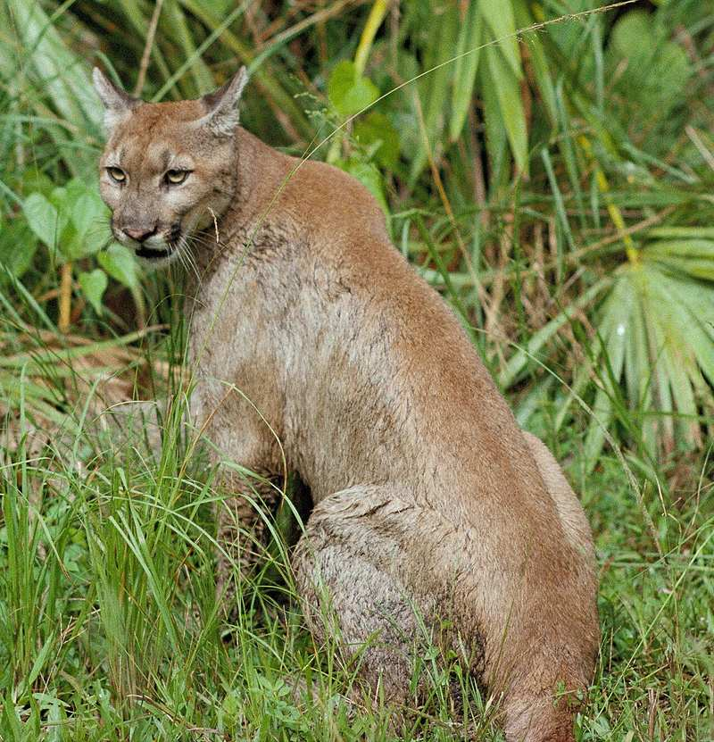
Adaptation files
Earn all four frames in the Lesson, then finish the checklist.
🔜 Coming up nextComing up next: 30.02
Investigation: Adaptation Comparison. Next time, compare animals of the same kind and find out why small differences matter.
Photo and music credits
- Everglades - Shark Valley - Anhinga drying its wings (12259642225), Murray Foubister, CC BY-SA 2.0
- American Alligator Partially Submerged (47109971894), evergladesnps, Public domain
- Corkscrew swamp sanctuary 4, Bobyellow, CC BY-SA 4.0
- Puma concolor coryi cropped, George Gentry, Public domain
- Pine flatwoods 001 by Scott Zona, scott.zona, CC BY 2.0
- Anhinga drying up (9146916865), KimonBerlin, CC BY-SA 2.0
- Manatees and a canoe at Blue Spring State Park, Florida (December 2018), Ben1152000, CC BY-SA 4.0
- Green Tree Frog - Hyla cinerea (50064869521), Christina Butler from Georgia, United States, CC BY 2.0
- Corkscrew swamp sanctuary 2, Bobyellow, CC BY-SA 4.0
- Scrub Lizard, (Sceloporus woodi), Glenn Bartolotti, CC BY-SA 4.0
- Florida Black Bear Scenic Byway - Hikers on the Yearling Trail - NARA - 7718416, Unknown authorUnknown author or not provided, Public domain
- Female Florida Panther with Kittens on Florida Panther National Wildlife Refu…, USFWS/Southeast, Public domain
- Wading Birds Feeding at Shark Valley Slough (49860843262), evergladesnps, Public domain
- Audubon Society Corkscrew Swamp Sanctuary, Marc Ryckaert (MJJR), CC BY 2.5
- Puma concolor coryi Florida panther, U.S. Army Corps of Engineers, Public domain
- Corkscrew swamp sanctuary 3, Bobyellow, CC BY-SA 4.0
- Gator on Anhinga Trail (5632544106), Everglades NPS from Homestead, Florida, United States, Public domain
- Panther kitten in Florida - 130613-A-CE999-085, USACE Erica Skolte, Public domain
- Florida Scrub Lizard - Sceloporus woodi, Lake June-in-Winter Scrub State Park…, Judy Gallagher, CC BY 2.0
- Corkscrew Swamp Sanctuary - Trail, P. Hughes, CC BY-SA 4.0
- NASA Kennedy Wildlife - Florida Scrub Jay (1), Ben Smegelsky, Public domain
- Florida Panther - Puma concolor coryi, Fakahatchee Strand Preserve State Park…, Judy Gallagher, CC BY 2.0
- Everglades - Shark Valley - female Anhinga drying its wings (12259791643), Murray Foubister, CC BY-SA 2.0
- American Alligator - Anhinga Trail, Everglades National Park, Homestead, Flor…, Judy Gallagher, CC BY 2.0
- Green Tree Frog (Hyla cinerea) (44546807095), Peter Paplanus from St. Louis, Missouri, CC BY 2.0
- American Green Tree Frog (Hyla cinerea) - Flickr - GregTheBusker, Greg Schechter from San Francisco, USA, CC BY 2.0
- Early morning mist (9610162672), U.S. Fish and Wildlife Service Southeast Region, Public domain
- Endangered Florida manatee (Trichechus manatus) (7636809538), U.S. Fish and Wildlife Service Headquarters, Public domain
- Florida Manatee FWS 1, Steve Hillebrand / USFWS, Public domain
- Manatees swimming - DPLA - 7d644b43b7ad702030cb82f0dd053f87, Department of the Interior. U.S. Fish and Wildlife Service. , Public domain
- Florida Manatee FWS 9, Steve Hillebrand / USFWS, Public domain
- Alligator Crâne et Mandibule, Didier Descouens, CC BY-SA 4.0
- Florida Scrub Lizard - Sceloporus woodi, Lake June-in-Winter Scrub State Park…, Judy Gallagher, CC BY 2.0
- NASA Kennedy Wildlife - Florida Scrub Jay (3), Ben Smegelsky, Public domain
- Music: Swan Lake, Act II (Pyotr Ilyich Tchaikovsky), European Archive via Musopen, public domain recording (via Wikimedia Commons).
- Opti the owl: Optima Academy. Sound effects are made by the page. The manatee movie, the Hide Test, and the Classification Cabinet are models; every place photo is real. The green leaf in the Hide Test is cut from the tree frog photo.